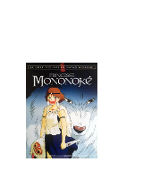
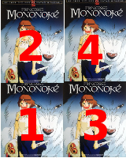

{kind=link}
ZImage : T_Image := (quelque chose de type T_Image) ;▸Objectifs
- Afficher et transformer une image (parcours d'image et utilisation de l'acteur graphique.)
Prérequis
- Vous avez terminé la première partie sur les caractères
- Vous savez qu'une image est composée de points colorés appelés pixels.
▸Mission 2
Nous nous intéressons maintenant à la manipulation d'images.
▸Etape 1
((*<<)*>:)<<</~~^/:\::;^:/\\\:~v;*/vv;\)*()v/\/(\((v(:^:v(+)/+:~:/(+(;;v~:::(//:)++:)/::r(\)/
<(<<>)<<:/:lr)+!~;(:/\\;:v\://i</</(*;\v))<*+/:)()vv</~:(*+):~)~\;v/v\iv~:::(;/:*;\:(\(:/)/(/
<<<<<<<~=<nCsp]=~+\CpSyZt^://;/\i)/<*~//(><(;<<></(><:~/vv~)/~(;/;(/*:;<~:::(//:);/:(/(:i*/)\
<)<<<vr/V3VP&&3>~<>;~\:r+(\;r;:=:::**~\:*<<:(<<<<;(<<)~~*v~((~:;;+:;*:;*^::;/;/+*+r:)/):/)/v/
<)>*~x&&t*h?rT+/~.~~'^=~;v:;r/;~>;*;)~;)<<>:v<<><):<<(~~<*~(*~(\;\;\*~'^-\(` _:'''^+*::*\)/
<<<^x3&&&Gst*+^' `<! -\:\)+|<+*/>i;)><<(><<<<</<<+^^/;^;(^(\;/;i:.,` ` ```_.+(::(/*:
<*<^2VVVsJri'. -.=!.`` -vr*+;</</>i;(<x<v<>><x<+*~.',-^,(/!(:\::/v\:<^~^---.;://<)/<::<:*v
<v<*:vvv;:~' ,` _.</~~++(v<;;>r</<;;v<>x:<<x><*;*^-.',~v(+~*/;/:\>/r^' ',` `=:<(/>v:<(v:
>*<<x<<<*)(+ .=+-\+:~~(~<v<;i>L<r<)v>x<f>:<<><~:(\^=;^^((~~v/;/(+<\:\':):' '/:>::v/:((*)
<vx<<<<<(((|l' f}/sL^\^~*;*:>~ixewvxe4Gexzsrv)>(~*<v*/v:!~*/~*+:/*/>/r<~()\ -/:<(:*v:((v:
<)<<<<<<(*)(i~ `|ivw~>:~;*/(:>L::(<Ls&K0aa0Gkx):/~)****v(/^<:~(~(/*\v:r<i((:. +;;/::v/(::(/
</><<<<(:(**()`_FoVr~(\^;*\:;a&2Y(xr<sF}s2333s*><~:((v(/<:^<*~)+(~*=v:;*~():;` .` `,~(/:::(\
>/<<<:(:~~~::/,/~sT;~;^'~(/:+fFF?1xLCy&&&000P<JZC:)**v(:<:^<*~(|v+:;::~-`,^~^- ` `--`-\/:/:\:
<v</^/0^!..,'~++,~+()(^.;;;;ixo0&g&m&gX&&04k<(::\+(<<<(:((^((~v~<r(+/;```.!_' . -. -\(//:/
<(~.~\V^^^.,,```_~i::/~^;(\;iV0XX555555g&3Gkx>;~;;<<<><v((~)v=>+<\T~:!''.;\`` ~i| =\(/):/
<(,^=+/((~ ^' `~=~/++^-^^^^^/T~T5XXX&&&3S000Sr/;\<<>>>v;:~;T~:~:~\!^' '^~~ `:/- ^/:/v::
<;:(>(v)~ ` :x^;;.`,`'`.._/*fVh(*V&300HX&&[+;;oo*<v://^i\~/^/^` ` ,`_+!' ^!=`` `'~(::
(:<(*:v)` '` +x~irv'^!.=^!^^'~;^zw4O&&&0&4&*i*4&p<*()\/~;:~:^\~+..=~~--/v -/!;'~!_.,/;/
)((()(())+T~x):;=xl/(+=+.^~~~;^xw&ggggXXXO300P1zxf>>**((\)/~(~\!/^~+|/~!` '' `` '-` `\;)\:+:
(:(//::)(~,-,```/>|'|:r=/C(I(~v&X5XgX&XXb&P}C4&&3af<**<)r*(~(^\|/^~~|/+- `!::;` '~\;\/(~:
)*(::::::,```/',^+\i+'<++<>\!(*4P4Y30230S0mkqXX&0Z><*>*)~*(~*~/!;^+!+:' .::\/(/` -i\/:/(;:
<<(:/://:^```,',,`-\)\!.!~i~~(/C<>>hy000S0k<xVaPF\:**<*(~((~(|/!:~+|iv.` ,((:/:)(| +/:(/:/:
xzjjv<v(/!' `!,-|-i>xv~:(\:<o*>^{{x~<CFFxsxxv~~~~;/<<*:~(:~v!(~:~;|+v+` ;:::/:::/ .;:::://:
XX&&XX&X&k'` `qpx.^,<suswkC}uz:x;j)<~<x^shkx>:^~~^;\<<(v~)(~v!/!(~/+~)- ^/://;(:/` ^;(//;/\\
XXXXXXXXXk`' +&&r,''+VXX55gggg5g5gggg555XX&&2aapwpppwwwuwsusLxIxL>:;>` -;;+/;\:_ +;\~~^+;
XXXXXXXXX&o+```sXk,~`'`^0g55555g555555gg55gg55555555555555g550k?r~~^!|iLna&0Ps*r^-_.=ouoL::~~
X5XXXX5XXXk_``=&X5S&s```)X55555gg5555555g555555555gg2k7T\~'^!|icop&&X0V?T~'_=:xs2g55g5gg55gg5
XX555XgXXF>vi.&XXgX&Y'``aXgg5X5555555555550VF*\~',-_!icop05ggg0h*r~'_.;ns4ggggg5g55555g555555
XXXXXXXXS?&X[^aXXXXf\=.~&555XXX550sF*r^,,_.|ivnsa&g5g53VF*\~'.=Lnsmggg55g5g55555g55gg5g555555
XXXXXXXX/T(T~0XXXXPs&(f^w7T;^',_'_|=Lco0g5g55g5&UF*\^''=ixs0g5gg555555g555g55g55g5555g55g5g55
XXXXXXXe~~``*r~/h?~*Y+! `!iLxopSX55555&aF*~'-'.=Lxsa&5555g555g5555555g5ggg55gg55555555555555
XXXX&&p\T-`.````_.,i,`oP3XXX5gXgGk*~',``_|ivzp&g55555g55555555g5555555g555555555555555g5g5555
XXX4:~o=-_ivnw0XXr+-``'~?*T~,,,``_!ivo3gg5gg555555g55ggg5gg555555g55555g5gg5555g5555555555555
XXX&ppXXXXXX&FfkF-~,r-````_|:xsS55gg5g555g555555555555555555g555555g5g5g5555555g555555555g555
XXXgXXXggXXXk1*0&si~\vopXg55g555g5555g55555g55555g5g555g555555555555g555g55g55555555g555g5555
- Dans votre dossier algo2, copiez une image JPG de bon goût, de taille maximale 800x600 qui n'ait aucun axe de symétrie. À défaut, prenez cette affiche de film (clic-droit sur le lien : enregistrer la cible du lien...)
 Écrivez un nouveau programme Mission2, ajoutez une procédure
Écrivez un nouveau programme Mission2, ajoutez une procédure Afficher_Imagequi prend en argument une image (de type T_Image) et qui l'affiche.
Le type T_Image est défini dans l'acteur JPG. et l'affichage se fait grâce à l'acteur GAda.Graphics.- Écrivez une procédure de test
Tester_Afficher_Imagequi demande à l'utilisateur de choisir un fichier jpg et qui l'affiche.- Voyez l'acteur GAda.Plus pour choisir un fichier.
- Rappelez-vous qu'on ne définit pas de variable de type String, seulement des constantes, avant le
begin.
Il n'est pas nécessaire de donner la taille d'un tableau ou d'une matrice lorsqu'on l'initialise immédiatement, par exemple
▸Etape 2
- Modifiez la procédure
Afficher_Imagepour qu'elle prenne deux arguments supplémentaires : les coordonnées où l'on veut afficher l'image. Testez en ouvrant une fenêtre deux fois plus large et deux fois plus haute que l'image, et en affichant l'image décalée de +(120,80). Vous devez obtenir ceci :  - En créant quatre variantes de votre procédure d'affichage, afficher l'image avec différents filtres :
- Une fois en normal (Afficher_Image)
- En permutant les composantes rouge, verte, bleue (par exemple, la composante verte prend la valeur du rouge, et la composante rouge prend la valeur du bleu, etc.).
- En négatif (chaque composante de couleur z devient 255-z)
- En noir et blanc (tons de gris, obtenus en prenant chaque composante égale à la luminosité).
La luminosité d'un pixel se calcule en faisant la moyenne des trois couleurs (en réalité, la moyenne devrait être pondérée en fonction de la sensibilité de l'oeil humain aux différentes couleurs). 
- (À laisser si vous êtes en retard) :
- "Floutage" (rendre l'image floue) : on rend l'image floue en remplaçant chaque pixel (x,y)par une moyenne des pixels situés dans un carré de taille n centré en (x,y).
Testez avec n = 5, 10, 20. - Détection de contours : remplacer chaque pixel par le gradient de la luminosité au point considéré. Pour ceux qui ont peur des gradients, ne prendre que le gradient horizontal, i.e. la dérivée de la luminosité selon l'axe des X. Voir filtre de Sobel sur Wikipedia.
▸Acteurs utilisés
▸Bilan
- Vous connaissez la structure classique d'une image numérique : une matrice de point colorés (définis par trois composantes R,G,B).
- Vous promettez d'être désormais rigoureux concernant les indices de lignes et de colonnes.